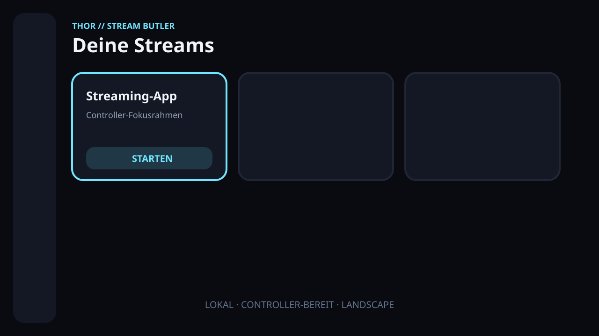

LAUNCHER
Controller-first Dashboard
Adaptive Kachelansicht mit sichtbarem Fokus, lokalen App-Icons und sicherem Launch-Intent-Check.
Ein zentraler Gaming-Streaming-Launcher für Android-Handhelds, der nicht nur Apps öffnet — sondern vorher prüft, ob dein Netzwerk bereit ist.

Vom Cloud-Gaming-Dienst bis zum eigenen Sunshine-Host: große Kacheln, klare Zustände und volle Kontrolle mit Controller, D-Pad, Tastatur oder Touch.
Adaptive Kachelansicht mit sichtbarem Fokus, lokalen App-Icons und sicherem Launch-Intent-Check.
Latenz, Jitter, Paketverlust, DNS, WLAN-Signal und Host-Erreichbarkeit — statt eines einzelnen Speedtest-Werts.
Hosts lokal speichern, TCP-Ports testen und Wake-on-LAN-Magic-Packets an konfigurierbare Ziele senden.
Die letzten 100 Messungen bleiben lokal und zeigen, ob sich deine Verbindung verbessert oder verschlechtert.
Die Verbindung ist für Gaming-Streaming sehr gut geeignet.
Thor Stream Butler bewertet die Faktoren, die eine Gaming-Session wirklich spürbar machen — nachvollziehbar und mit konkreten Empfehlungen.
Direkt starten. Die Verbindung ist bereit.
Nutzbar. Die App erklärt mögliche Einschränkungen.
Erneut testen, abbrechen oder bewusst starten.
Android oder das Netzwerk liefert keinen verlässlichen Wert.
Per Controller, D-Pad, Tastatur oder Touch.
Kurzer Test ohne unnötigen Download.
Klare Farbe, Begründung und Empfehlung.
Automatisch oder mit deiner Entscheidung.
Ein bewusst schlanker MVP mit klaren Paketgrenzen, testbarer Domain-Logik und lokaler Persistenz — bereit für spätere Modularisierung.
Sunshine- und Moonlight-Hosts über Android-konforme, datenschutzfreundliche Discovery-Abläufe.
Empfehlungen pro Streaming-Dienst, getrennt nach Ethernet und WLAN.
Timer, Akku- und Temperaturüberwachung während der Streaming-Session.
Lokale Konfigurationsbackups und ein optionaler Windows-Begleiter.
Thor Stream Butler entsteht ohne Werbung, Tracking oder Telemetrie. Wenn dir das Projekt hilft und du freiwillig Danke sagen möchtest, kannst du mir gerne einen Kaffee ausgeben.
Gebaut im selben local-first und handheld-first Geist wie Thor ROM Butler.
Lade die zweisprachige (EN/DE) debug-signierte Vorschau v0.2.0-alpha.1 herunter oder entdecke Quellcode, Architektur und Roadmap auf Englisch und Deutsch.